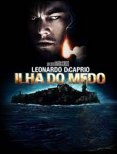
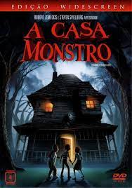

sul dos Estados Unidos, o ex-escravo Django faz uma aliança inesperada com o caçador de recompensas Schultz para caçar os criminosos mais procurados do país e resgatar sua esposa de um fazendeiro que força seus escravos a participar de competições mortais.
A ilha do medo
 Nos anos 1950, a fuga de uma assassina leva o detetive Teddy Daniels e seu parceiro a investigarem o seu desaparecimento de um quarto trancado em um hospital psiquiátrico. Lá, uma rebelião se inicia e o agente terá que enfrentar seus próprios medos.
Interstellar
As reservas naturais da Terra estão chegando ao fim e um grupo de astronautas recebe a missão de verificar possíveis planetas para receberem a população mundial, possibilitando a continuação da espécie. Cooper é chamado para liderar o grupo e aceita a missão sabendo que pode nunca mais ver os filhos. Ao lado de Brand, Jenkins e Doyle, ele seguirá em busca de um novo lar.
O lobo de Wallstreat
Jordan Belfort é um ambicioso corretor da bolsa de valores que cria um verdadeiro império, enriquecendo de forma rápida, porém ilegal. Ele e seus amigos mergulham em um mundo de excessos, mas seus métodos ilícitos despertam a atenção da polícia.
Clube da Luta
Um homem deprimido que sofre de insônia conhece um estranho vendedor chamado Tyler Durden e se vê morando em uma casa suja depois que seu perfeito apartamento é destruído. A dupla forma um clube com regras rígidas onde homens lutam. A parceria perfeita é comprometida quando uma mulher, Marla, atrai a atenção de Tyler.
Silent Hill
A filha de Rose é atormentada por visões desde pequena. Desesperada com a piora da menina, Rose decide levá-la à cidade que sempre menciona durante os pesadelos. Próximas ao local, elas sofrem um acidente e a criança desaparece misteriosamente.
Donnie Darko
Donnie é um jovem excêntrico que despreza a grande maioria de seus colegas de escola. Ele tem visões, em especial de Frank, um coelho gigante que só ele consegue ver e que o encoraja a fazer brincadeiras humilhantes com quem o cerca. Um dia, uma de suas visões o atrai para fora de casa e lhe diz que o mundo acabará dentro de um mês. Donnie inicialmente não acredita, mas, momentos depois, a turbina de um avião cai em sua casa e ele começa a se perguntar qual é o fundo de verdade dessa previsão.
Jumanji 2
Spencer volta ao mundo fantástico de Jumanji. Os amigos Martha, Fridge e Bethany entram no jogo e tentam trazê-lo para casa. A turma descobre ainda mais obstáculos e perigos a serem superados.
Os bons companheiros
Um jovem cresce na máfia e trabalha arduamente para crescer entre seus companheiros. Ele gosta da vida de dinheiro e luxo, mas não liga para o horror que provoca. Infelizmente, a dependência de drogas e alguns erros finalmente destroem sua escalada até o topo. Baseado no livro Wiseguy por Nicholas Pileggi.
A Casa Monstro
 Nenhum adulto acredita quando três adolescentes falam que existe uma casa no bairro que é uma criatura perigosa. Com o Dia das Bruxas se aproximando, eles têm que descobrir uma forma de destruir a casa antes que ela faça mal a crianças inocentes.